5 Grafikk med ggplot
5.1 Grammar of graphics
I R er det mange funksjoner for å lage grafikk. Noen er spesialiserte og knyttet til spesielle analysemetoder og gir deg akkurat det du trenger. Vi skal her bruke et generelt system for grafikk som heter ggplot som kan brukes til all slags grafikk. Funksjonen ggplot er bygget opp som en gramatikk for grafisk fremstilling. Det ligger en teori til grunn som er utledet i boken ved omtrent samme navn: The grammar of graphics. Det er mye som kan sies om dette, men det viktige er at grafikken er bygget opp rundt noen bestanddeler. Når du behersker disse kan du fremstille nær sagt hva som helst av kvantitativ informasjon grafisk.
Systemet er bygd opp med lagvis kode. Selve grafikken kan også legges på gradvis hvis man ønsker plotte flere ting i samme plot og følger da rekkefølgen på koden. For enkle plot som vi skal bruke her angir man i denne rekkefølgen og med en + mellom hver del (vanligvis per linje, men linjeskift spiller ingen rolle):
- Angi data og hva som skal plottes
- Angi hvordan det skal plottes
- Angi andre spesifikasjoner (farger, titler, koordinatsystemer osv)
Dette blir tydeligere i eksemplene og forklares underveis.
- Det første argumentet i
ggploter data. Altså: hvilket datasett informasjonen hentes fra. aes()spesifiserer aestethics, som er hva som skal plottes. Først og fremst hva som skal på x-akse og y-akse (og evt. z-akse), men også spesifikasjon av linjer (farge, linjetype) og fyllfarger, gjerne etter en angitt gruppering.geom_*står for geometric og sier noe om hvordan data skal se ut. Det kan være punkter, histogram, stolper, linjer osv.coord_*definerer koordinatsystemet. Stort sett blir dette bestemt av variablene. Men du kan også snu grafen eller definere sirkulært koordinatsystem, eller andre enklere ting. *facet_*definerer hvordan du vil dele opp grafikken i undergrupper
5.2 Kategoriske variabel
5.2.1 Stolpediagram
ggplot(norlag, aes(x = hc231)) +
geom_bar() +
theme(axis.text.x = element_text(angle = 90))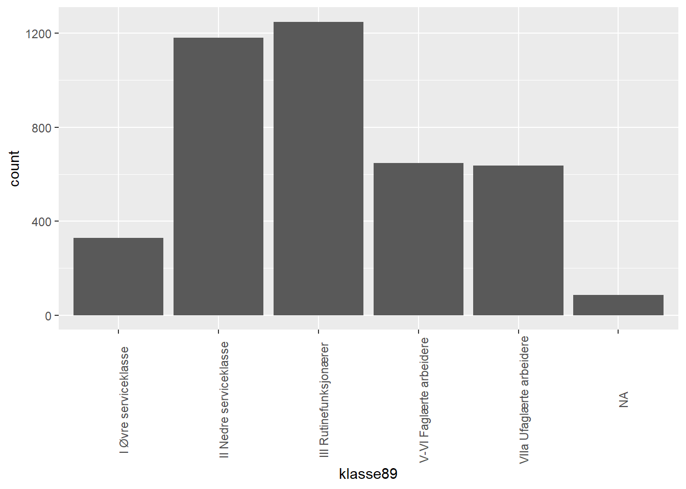
Noen ganger ønsker man å vise fordelingen for to ulike grupper, la oss si for kjønn. En mulighet er da å rett og slett lage to stolpediagram ved siden av hverandre. Til dette kan man legge til facet_wrap(~iokjonn) der altså iokjonn er variabelnavnet for kjønn. Hvert plot får da en automatisk tittel basert på verdiene på den variabelen (dvs. her: “factor levels”).
ggplot(norlag, aes(x = hc231)) +
geom_bar(position="dodge") +
facet_wrap(~iokjonn)+
theme_minimal()+
theme(axis.text.x = element_text(angle = 90))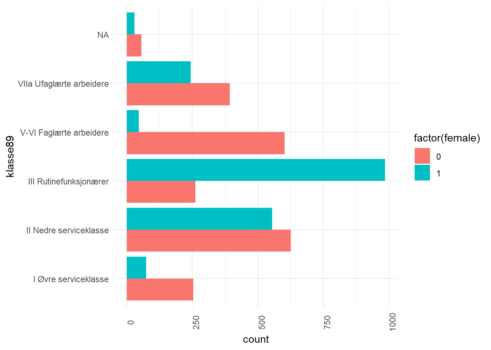
Det kan da være en fordel å bruke farger ved å spesifisere fill = .... Her er et eksempel:
ggplot(norlag, aes(x = hc231, fill = iokjonn)) +
geom_bar() +
theme(axis.text.x = element_text(angle = 90))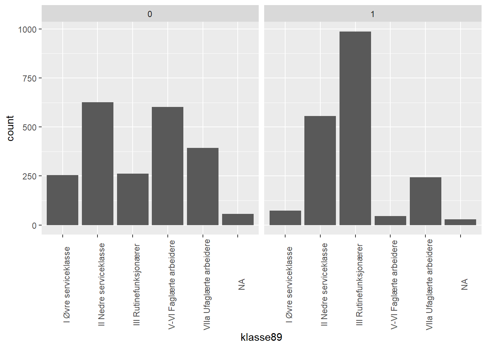
Et automatisk forvalg for geom_bar() er hvordan gruppene plasseres som er position="stack". Det betyr at gruppene stables oppå hverandre. Dette er godt egnet hvis poenget er å vise hvor mange av hvert kjønn som er i hver gruppe. Det er mindre egnet hvis du ønsker å sammenligne menn og kvinner. Da er alternativet å velge position="dodge" som følger:
ggplot(norlag, aes(x = hc231, fill = iokjonn)) +
geom_bar(position="dodge") +
theme(axis.text.x = element_text(angle = 90))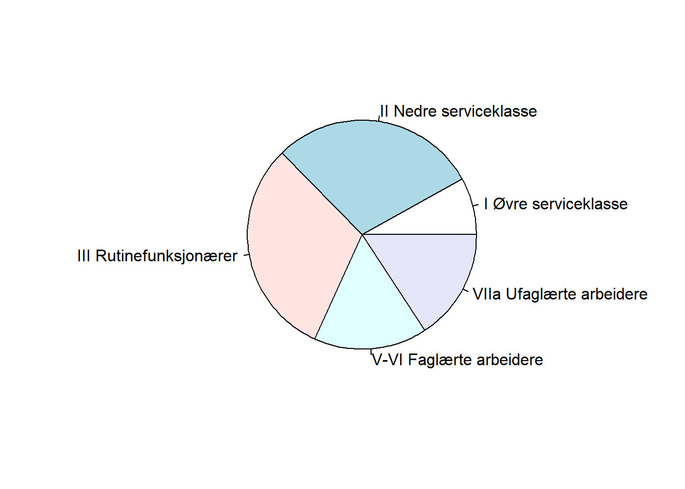
5.2.2 Kakediagram og satans verk
Generelt er ikke kakediagram å anbefale da korrekt tolkning involverer å tolke et areal som inneholder vinkel. Med få kategorier som er rimelig forskjellig kan det gi et ok inntrykk, men ofte ender man opp med å måtte skrive på tallene likevel.
pc <- norlag %>%
group_by(hc231) %>%
summarise(n = n()) %>%
mutate(pct = n/sum(n)*100) %>%
ungroup()
ggplot(pc, aes(x = "", y = pct, fill = (hc231))) +
geom_bar(stat="identity", width=1) +
coord_polar("y", start=0) +
theme_void()+
geom_text( aes(label = paste0( round(pct,1), "%"), x = 1.4),
position = position_stack(vjust=.5), check_overlap = F) +
labs(x = NULL, y = NULL, fill = NULL)+
theme(axis.line = element_blank(),
axis.text = element_blank(),
axis.ticks = element_blank()) +
scale_fill_brewer(palette="Blues", direction = -1)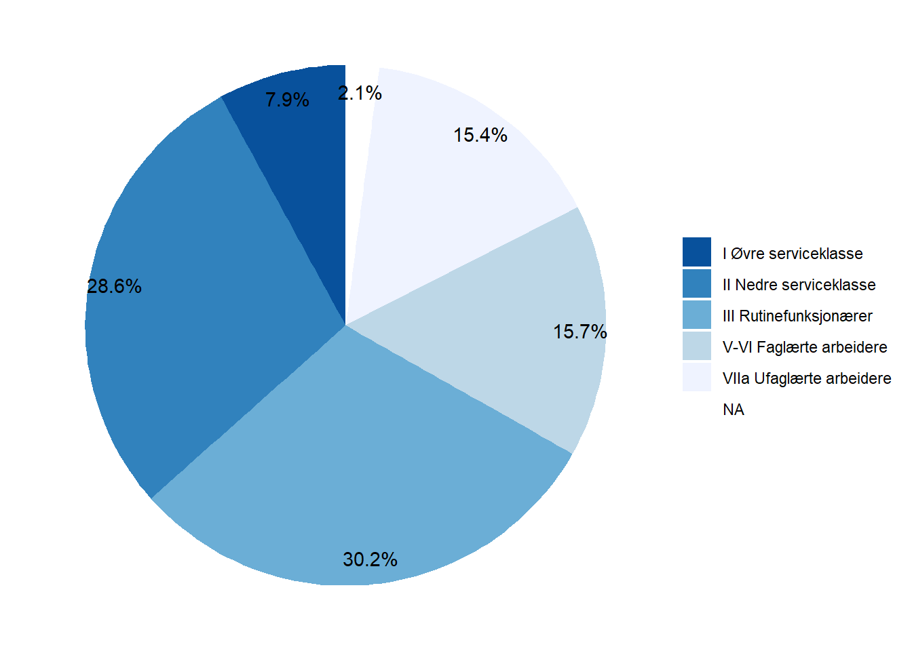
5.3 Kontinuerlige variable
5.3.1 Histogram
ggplot(norlag, aes(x = hcPCS12)) +
geom_histogram()Det er også vanlig å fremstille det samme på en “tetthetsskala”, der arealet summeres til 1. Det betyr at arealet for hvert intervall tilsvarer en andel. Visuelt sett er det vel så mye arealet vi oppfatter som høyden på stolpene. Men det er bare skalaen på y-aksen som har endret seg. Visuelt sett, ser histogrammene helt like ut.
ggplot(norlag, aes(x = hcPCS12, y = ..density..)) +
geom_histogram()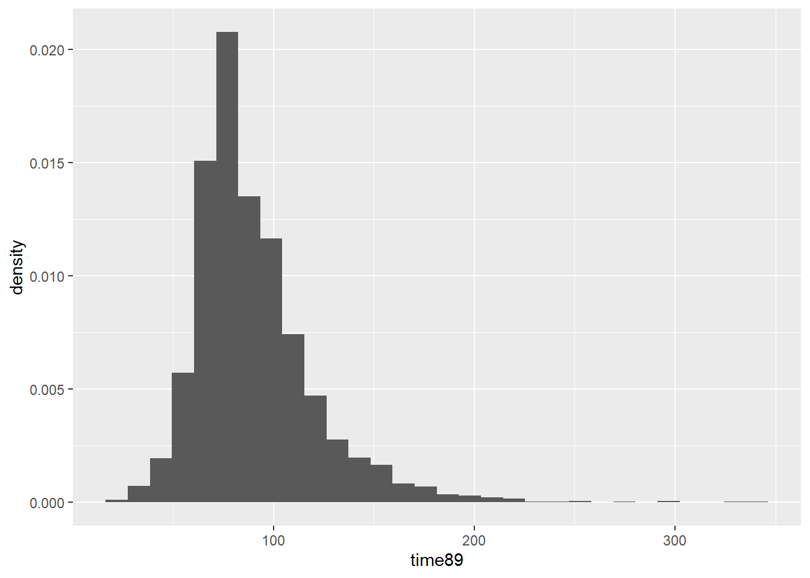
5.3.2 Density plot
Density plot er en måte å fremstille det samme på, men i stedet for å dele inn i intervaller som i histogram lager vi en glattet kurve. Det blir på skalaen “tetthet” som i histogrammet ovenfor.
ggplot(norlag, aes(x = hcPCS12)) +
geom_density()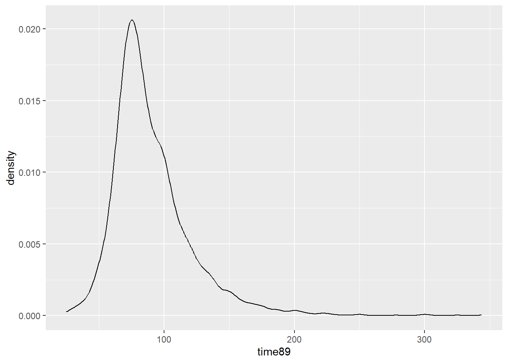
ggplot(norlag, aes(x = hcPCS12)) +
geom_histogram(aes(y = ..density..), fill = "lightgrey", col = "grey") +
geom_density(col = "red", linewidth = 1) +
theme_minimal()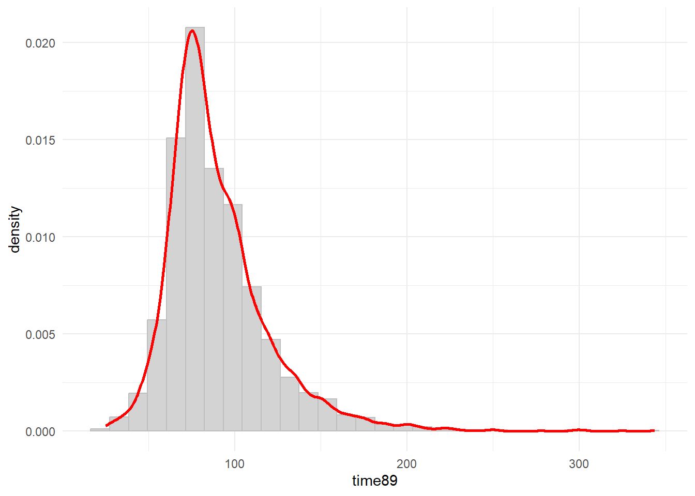
En fordel med denne fremstillingen er at det er lettere å sammenligne grupper. Her er et eksempel med density plot etter hvor mye man drikker.
ggplot(norlag, aes(x = hcPCS12, group = hc231, linetype = hc231)) +
geom_density(linewidth = 1)+
guides(fill = guide_legend(override.aes = list(shape = 1 ) ) ) +
theme_minimal()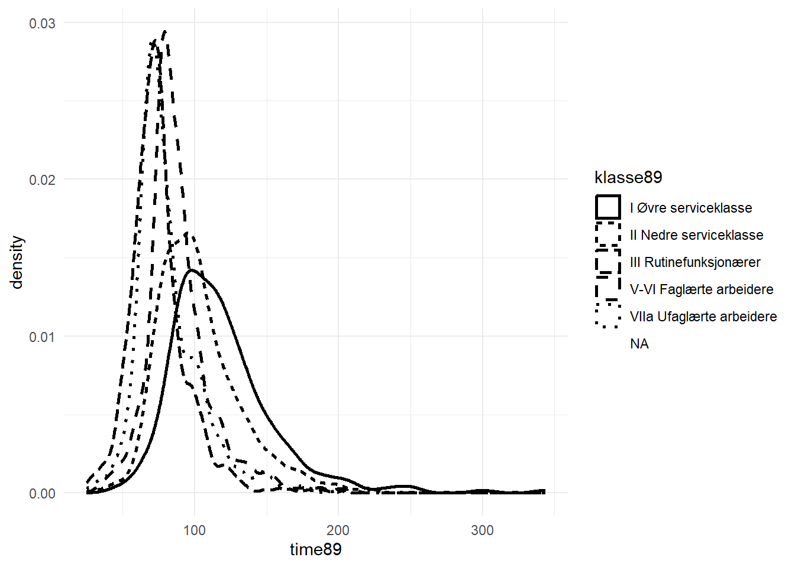
ggplot(norlag, aes(x = hcPCS12)) +
geom_density(linewidth = 1)+
theme_minimal()+
facet_wrap(~hc231, scales="free")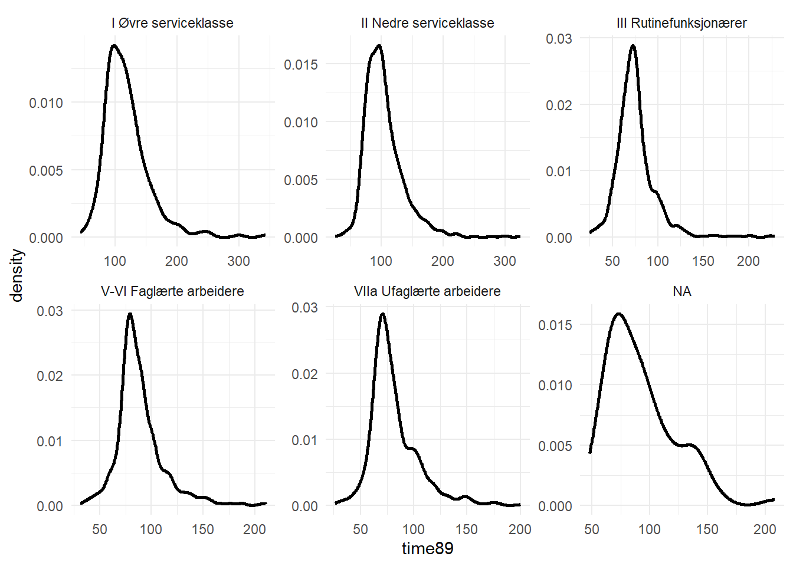
ggplot(norlag, aes(x = hcPCS12, fill = iokjonn)) +
geom_density(alpha = .3)+
guides(fill=guide_legend(title="Kjønn"))+
theme_minimal()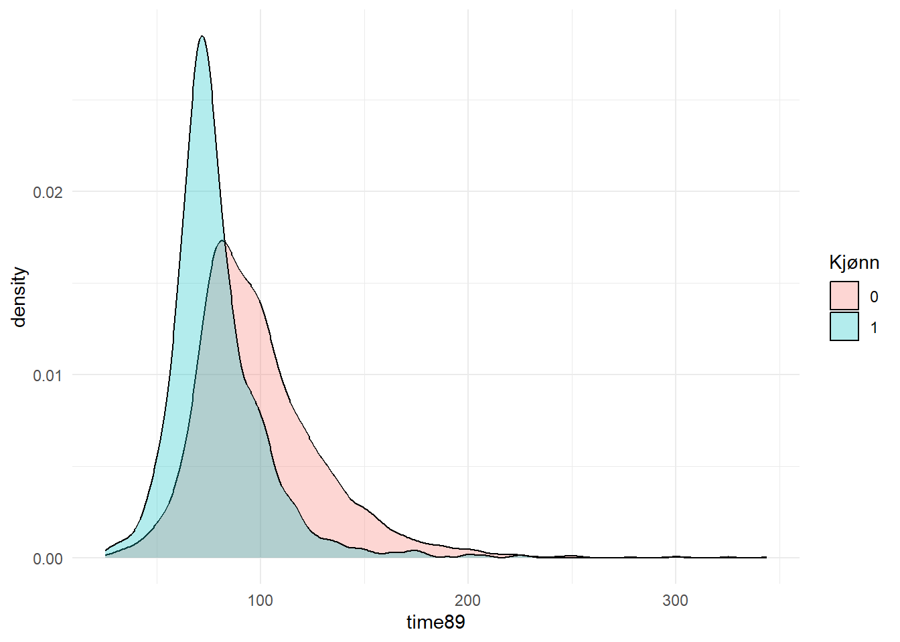
5.3.3 Flere variable samtidig
5.3.3.1 Boksplot
ggplot(norlag, aes(x = hcPCS12, group = hc231)) +
geom_boxplot()+
theme_minimal()+
coord_flip()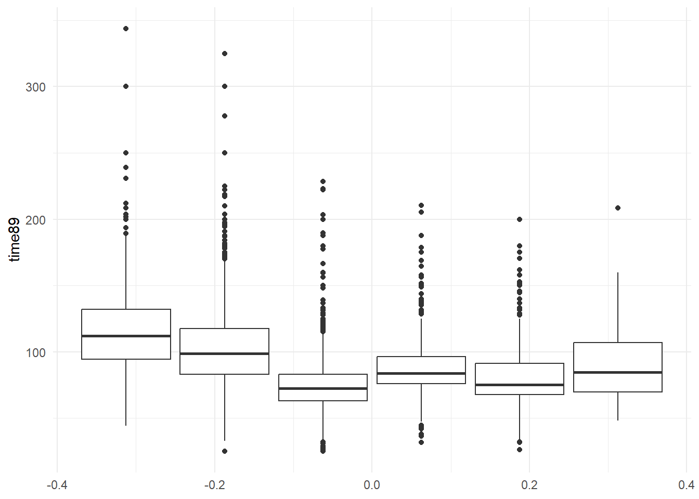
5.3.3.2 Scatterplot
glimpse(norlag)Rows: 9,865
Columns: 13
$ ref_nr <dbl> 5, 5, 10, 10, 15, 15, 22, 23, 25, 27, 27, 28, 28, 32, 33,…
$ round <dbl> 1, 2, 2, 1, 1, 2, 1, 1, 1, 2, 1, 2, 1, 2, 2, 2, 2, 2, 1, …
$ iodeltakelse <fct> "Deltatt T1 og T2", "Deltatt T1 og T2", "Deltatt T1, T2 o…
$ ioalder <dbl> 29, 33, 10, 5, 19, 24, 24, 16, 32, 42, 37, 32, 28, 9, 32,…
$ iolandb <fct> NA, Norskfødt, Norskfødt, NA, NA, Norskfødt, NA, NA, NA, …
$ iokjonn <fct> Mann, Mann, Kvinne, Kvinne, Kvinne, Kvinne, Mann, Mann, K…
$ pa001c <fct> Ja, Ja, Ja, Nei, Nei, Nei, Ja, Nei, Nei, Ja, Ja, Nei, Nei…
$ pa300 <fct> Partner gjør mest, NA, NA, NA, NA, NA, Jevnt fordelt, NA,…
$ hc230 <fct> En gang i uken, En gang i uken, En gang i uken, En gang i…
$ hc231 <fct> 2-3 ganger i måneden, 2-3 ganger i måneden, 2-3 ganger i …
$ va207 <fct> Ganske viktig, Litt viktig, Ikke viktig, Litt viktig, Lit…
$ hcMCS12 <dbl> 6350, 6647, 6650, 4891, 4736, 3529, 2694, 6135, 5262, 678…
$ hcPCS12 <dbl> 7085, 6420, 7149, 7255, 6956, 7368, 7331, 7187, 6283, 624…ggplot(norlag, aes(x = ioalder, y = hcPCS12)) +
geom_point(alpha=.3)+
theme_minimal()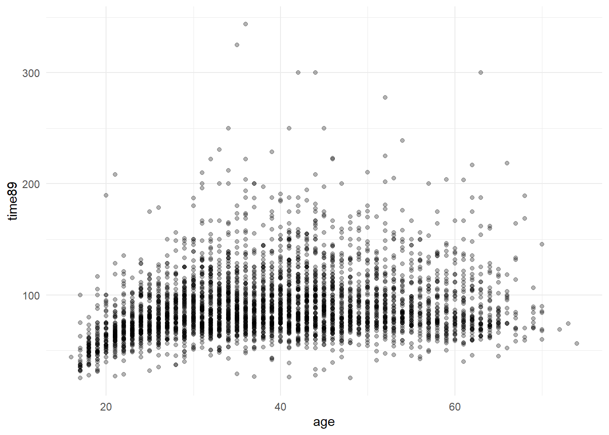
ggplot(norlag, aes(x = ioalder, y = hcPCS12)) +
geom_jitter(alpha=.1, width = .3)+
theme_minimal()5.3.3.3 Ridgeplot
Ridgeplot er en annen måte å sammenligne en kontinuerlig fordeling betinget på en gruppering.
library(ggridges)
ggplot( filter(norlag, !is.na(iolandb)), aes(y = iolandb, x = hcPCS12)) +
geom_density_ridges() 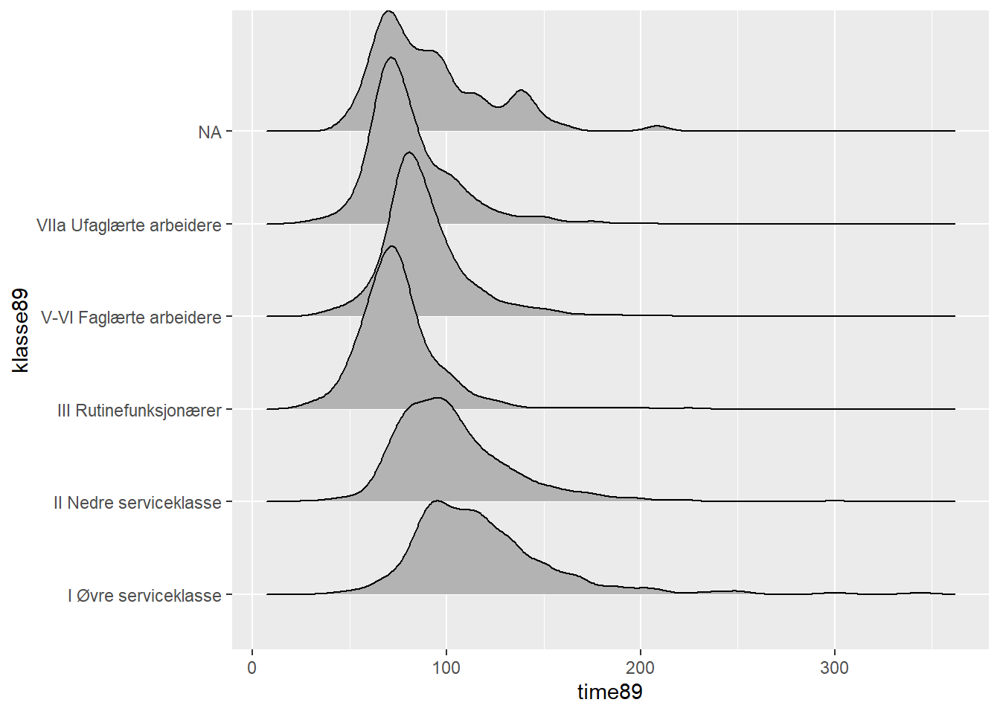